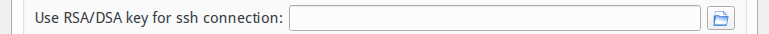
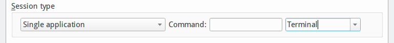
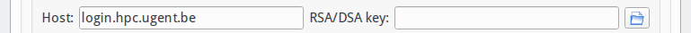
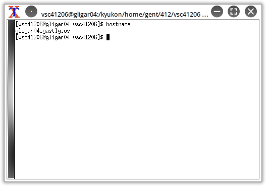

Graphical applications with X2Go#
X2Go is a graphical desktop software for Linux similar to VNC but with extra advantages. It does not require to execute a server in the login node and it is possible to setup a SSH proxy to connect to an specific login node. It can also be used to access Windows, Linux and macOS desktops. X2Go provides several advantages such:
-
A graphical remote desktop that works well over low bandwidth connections.
-
Copy/paste support from client to server and vice-versa.
-
File sharing from client to server.
-
Support for sound.
-
Printer sharing from client to server.
-
The ability to access single applications by specifying the name of the desired executable like a terminal or an internet browser.
Install X2Go client#
X2Go is available for several operating systems. You can download the latest client from https://wiki.x2go.org/doku.php/doc:installation:x2goclient.
X2Go requires a valid private SSH key to connect to the login node, this is described in How do SSH keys work?. This section also describes how to use X2Go client with a SSH agent. The SSH agent setup is optional but it is the easiest way to connect to the login nodes using several SSH keys and applications. Please see Using an SSH agent (optional) if you want to know how to setup an SSH agent in your system.
Create a new X2Go session#
After the X2Go client installation just start the client. When you launch the client for the first time, it will start the new session dialogue automatically.
There are two ways to connect to the login node:
-
Option A: A direct connection to "login.hpc.ugent.be". This is the simpler option, the system will decide which login node to use based on a load-balancing algorithm.
-
Option B: You can use the node "login.hpc.ugent.be" as SSH proxy to connect to a specific login node. Use this option if you want to resume an old X2Go session.
Option A: direct connection#
This is the easier way to setup X2Go, a direct connection to the login node.
-
Include a session name. This will help you to identify the session if you have more than one, you can choose any name (in our example "HPC login node").
-
Set the login hostname (In our case: "login.hpc.ugent.be")
-
Set the Login name. In the example is "vsc40000" but you must change it by your current VSC account.
-
Set the SSH port (22 by default).
-
Skip this step if you are using an SSH agent (see Install X2Go). If not add your SSH private key into "Use RSA/DSA key.." field. In this case:
-
Click on the "Use RSA/DSA.." folder icon. This will open a file browser.
 You should look for your private SSH key generated by puttygen exported in "OpenSSH" format in Generating a public/private key pair (by default "id_rsa" (and not the ".ppk" version)). Choose that file and click on open .
-
-
Check "Try autologin" option.
-
Choose Session type to XFCE. Only the XFCE desktop is available for the moment. It is also possible to choose single applications instead of a full desktop, like the Terminal or Internet browser (you can change this option later directly from the X2Go session tab if you want).
-
[optional]: Set a single application like Terminal instead of XFCE desktop.
This option is much better than PuTTY because the X2Go client includes copy-pasting support.
-
-
[optional]: Change the session icon.
-
Click the OK button after these changes.
Option B: use the login node as SSH proxy#
This option is useful if you want to resume a previous session or if you want to set explicitly the login node to use. In this case you should include a few more options. Use the same Option A setup but with these changes:
-
Include a session name. This will help you to identify the session if you have more than one (in our example "HPC UGent proxy login").
-
Set the login hostname. This is the login node that you want to use at the end (In our case: "gligar07.gastly.os")
-
Set "Use Proxy server.." to enable the proxy. Within "Proxy section" set also these options:
-
Set Type "SSH", "Same login", "Same Password" and "SSH agent" options.
-
Set Host to "login.hpc.ugent.be" within "Proxy Server" section as well.
-
Skip this step if you are using an SSH agent (see Install X2Go). Add your private SSH key within "RSA/DSA key" field within "Proxy Server" as you did for the server configuration (The "RSA/DSA key" field must be set in both sections)
 -
Click the OK button after these changes.
-
Connect to your X2Go session#
Just click on any session that you already have to start/resume any session. It will take a few seconds to open the session the first time. It is possible to terminate a session if you logout from the current open session or if you click on the "shutdown" button from X2Go. If you want to suspend your session to continue working with it later just click on the "pause" icon.
X2Go will keep the session open for you (but only if the login node is not rebooted).
Resume a previous session#
If you want to re-connect to the same login node, or resume a previous session, you should know which login node were used at first place. You can get this information before logging out from your X2Go session. Just open a terminal and execute:
$ hostname

This will give you the full login name (like "gligar07.gastly.os" but the hostname in your situation may be slightly different). You should set the same name to resume the session the next time. Just add this full hostname into "login hostname" section in your X2Go session (see Option B: use the login node as SSH proxy).
Connection failed with X2Go#
If you get the error "Connection failed session vscXXYYY-123-4567890123_xyzXFCE_dp32 terminated" (or similar), It is possible that an old X2Go session remained on the login node. First, choose a different session type (for example TERMINAL), then start the X2Go session. A window will pop up, and you should see that a session is running. Select the session and terminate it. Then finish the session, choose again XFCE session (or whatever you use), then you should have your X2Go session. Since we have multiple login nodes, you might have to repeat these steps multiple times.